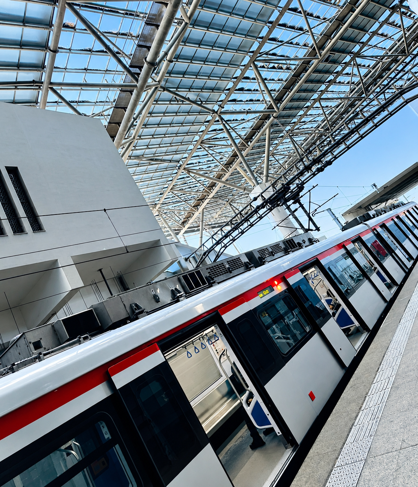

RAILWAY TECHNOLOGY / ENGINEERING
AhmedMagdy Salah
FOURTH-YEAR RAILWAY TECHNOLOGY STUDENT FOCUSED ON SAFE, RELIABLE RAILWAY OPERATIONS.
OSEEM, GIZA, EGYPT
FOCUS
PROFILE

RAILWAY TECHNOLOGY / EGYPTFourth-year Railway Technology student at October 6 University of Technology with an 88% cumulative grade (Excellent).
My technical diploma in Measurement & Control Devices complements my studies in railway technology.
Practical training in railway track fundamentals, metro maintenance, locomotive maintenance and overhaul, and industrial hydraulic and pneumatic systems has built my technical foundation. I am interested in railway signaling, track and infrastructure, maintenance, and rolling stock.
CAREER FOCUS
Railway Systems
Railway signaling, track and infrastructure, railway maintenance, and rolling stock.
Railway & Industrial Systems
Track fundamentals, metro and locomotive maintenance, measurement and control, and hydraulic and pneumatic systems.
EDUCATION
Bachelor's Degree in Railway Technology
October 6 University of Technology · Fourth year · Cumulative grade: 88% (Excellent).
Technical Diploma — Measurement & Control Devices
Galal Fahmy Technical Industrial School · Five-year system.
SKILLS
TECHNICAL
PROFESSIONAL
PROJECTS
UNIVERSITY PROJECTS
UNIVERSITY RAILWAY PROJECTS.
TRAINING
PRACTICAL TRAINING & COURSES
Track Fundamentals Training — RDMC
RATP Dev Mobility Cairo (RDMC). Completed a 50-hour program covering railway track fundamentals through theoretical and practical sessions.
Railway Maintenance & ISO Standards — ECM
The Egyptian Company for Metro (ECM). Field training on Metro Line 2 with exposure to heavy-maintenance workshops, overhauls, and simulation systems.
Smart Systems Summer Training — The Arab Contractors
Training in hydraulic-system fundamentals, pneumatic-system basics, and basic operation and troubleshooting concepts.
Locomotive Maintenance & Overhaul — ERMAS
Egyptian Company for Maintenance & Railway Services (ERMAS). Introduction to locomotive maintenance and overhaul, rolling-stock systems fundamentals, and inspection and maintenance procedures.
Industrial Workshop Fundamentals — Akhbar El Youm Academy
Practical training in engineering tools, industrial workshop fundamentals, and manufacturing processes.
LANGUAGES 02
Arabic
Native language.
English
Intermediate proficiency.
CONTACT
AHMED MAGDY SALAH
RAILWAY TECHNOLOGY STUDENT